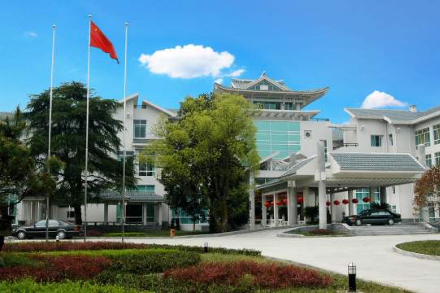
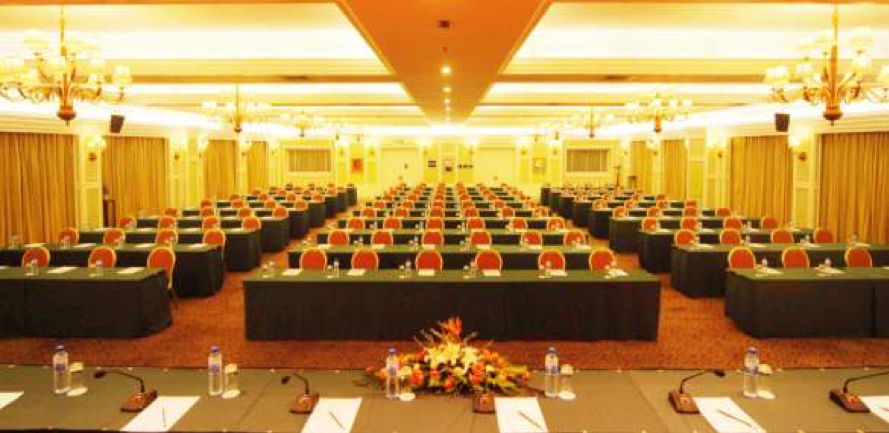

 寒假学校将于杭州花港海航度假酒店举行，酒店预订系统已经开放，详情请见链接。
杭州花港海航度假酒店是海航酒店集团旗下一家现代化、高品位坐落于景色迷人的西湖风景区的商务度假休闲酒店。酒店采用江南庭院式的建筑显得别具特色，格外古朴典雅，内庭与外庭绿树环绕，错落有致，小景与花园相映成趣，生机盎然，完全呈现出四季如春的美景，更突出了酒店的清新自然。酒店占地2万多平方米，拥有120个停车位。酒店交通便利，驱车8分钟即可到达市中心，10分钟可到达火车站，40分钟到达国际机场。不论商务或是旅居，杭州花港海航度假酒店都必将成为您理想中的“世外桃源”。
杭州花港海航度假酒店现拥有大小会议厅10余间，会议配套设施齐全，适合举办各类学术交流、高层研讨、新闻发布、项目论证、产品展示等，更是开展各类商贸活动及宴会庆典的理想选择。会议中心八楼的花港厅是一大型无柱两面开窗可容纳380人的多功能厅，活动舞台可根据您的意愿随意改变布置形式，使其真正达到多功能的要求。酒店会议设施齐全，多媒体投影仪、会场录音设施、影碟机、等离子大屏幕电视机、白板、激光笔、音响、各式话筒以及领麦等各种先进会议设备任您选择。酒店拥有经验丰富的宴会会议统筹专业服务队伍，能根据您的需求提供妥善的宴会和会议服务，令您称心如意。无论是举办15人的会议还是举办380人左右的大型宴会，能提供先进齐全的设备设施、舒适优美的环境和高品质服务的会议中心将是您的首选之地。
 现拥有各式客房226间（套），包括高级景观房、高级沙龙房、花港丽景房、高级园景套、豪华景观套、豪华行政套等。客房风格多样，设备一应俱全。从客房更可远眺湖光山色，俯览西湖秀色，让您尽情领略舒闲的乐趣。客房设施：卫星电视节目、本地和国际直拨电话、宽带上网接口、WIFI、独立控制的空调系统、迷你酒吧、吹风筒、电子门锁、电子保险箱、独立淋浴间等。 花港海航度假酒店设有两个餐厅和6个不同大小的包厢。恺撒宫西餐厅提供260个餐位，主理各式西式餐点、自助及料理，饮食风格多样，尽享饮食精粹。天香苑中餐厅提供220个餐位和6个包厢，主理杭州菜肴。 花港海航度假酒店地处景区，周边名景多。有闻名国内外、享誉古至今——西湖。有鱼群嬉戏，康熙题字——花港观鱼公园。有三月樱花漫、满园郁金香——太子湾公园。还有雷峰夕照、 柳浪闻莺、 杨公景行、 曲院风荷、 虎跑梦泉、六和塔、三潭印月、苏堤春晓等风景名区。